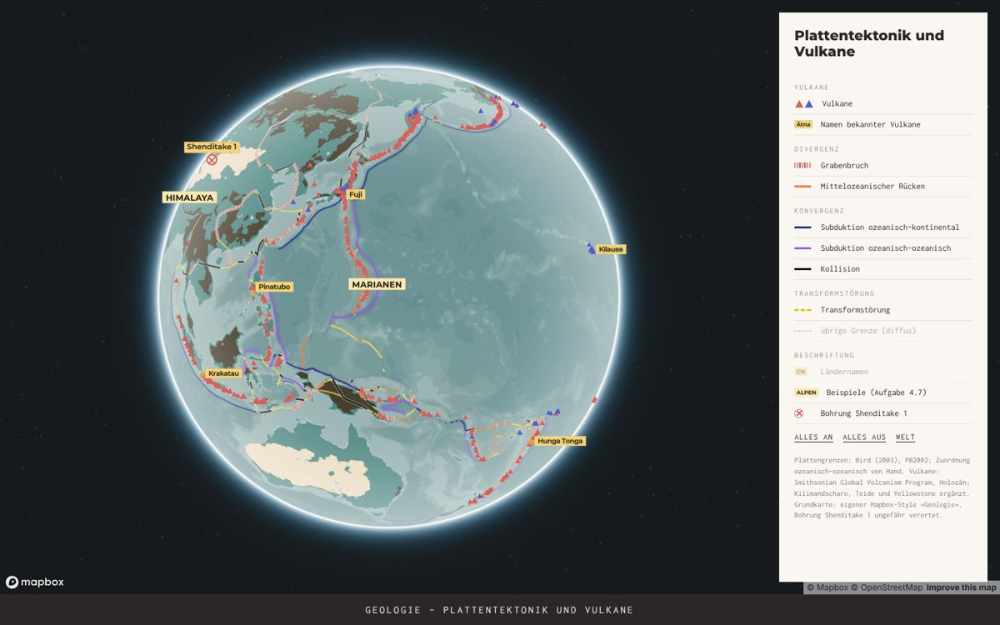
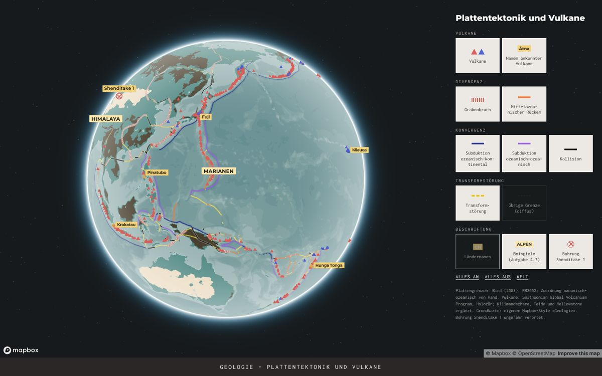
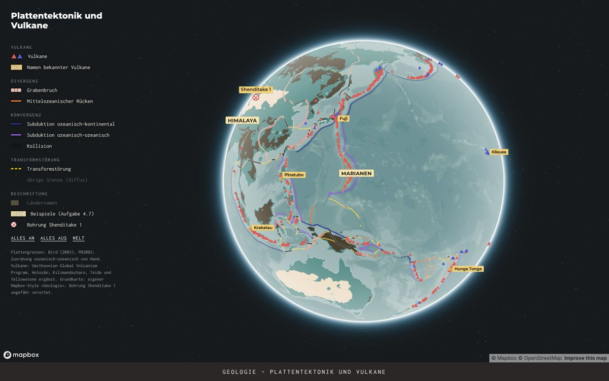

Varianten Plattentektonik-Seite

A Papierkarte
Helle Karte in Papierfarbe rechts, Daten als Liste, wie eine gedruckte Legende.
öffnen ↗
B Glas-Kacheln
Kacheln schweben rechts, ausgeschaltet dunkel durchscheinend, eingeschaltet hell.
öffnen ↗
C Freie Legende
Keine Kacheln, nur Symbol und Name links auf dem Weltraum; ausgeschaltet blass.
öffnen ↗Auf dem Handy sehen alle Varianten gleich aus (Kachelblatt unten), die Unterschiede gelten für Laptop und Beamer.